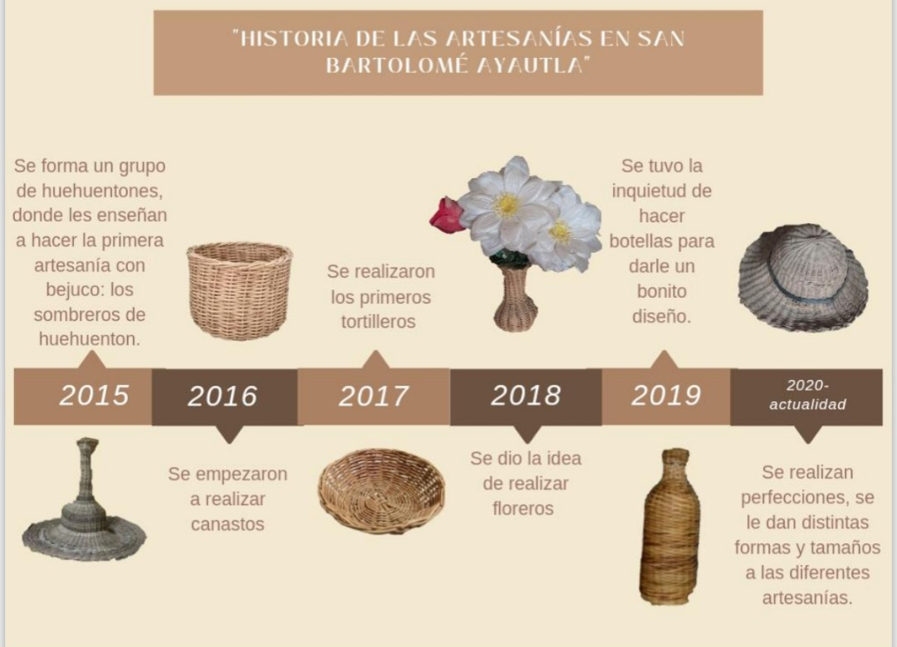

"HISTORIA DE LAS ARTESANÍAS CON BEJUCO EN AYAUTLA"
|
Las artesanías con bejuco o raíz se empezaron a realizar en el año 2015 en la comunidad de San Bartolomé Ayautla por un grupo de huehuentones que comenzaron a hacer sombreros con el objetivo de implementarlos en su vestimenta.
Aunque solo algunos aprendieron y continuaron haciéndolo, uno de ellos, el señor Crescencio Cruz Bonilla, siguió creando sombreros y poco después, en 2016, implementó otra artesanía: los canastos.
A medida que pasaba el tiempo continuó inventando otras artesanías, como tortilleros en 2017 y floreros en 2018.
En 2019 tuvo la idea de realizar forros de botellas y comenzó a perfeccionar nuevas técnicas.
Desde 2020 hasta la actualidad ha seguido creando nuevos diseños y formas para mejorar sus productos y satisfacer a sus clientes.
|

|